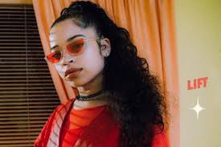
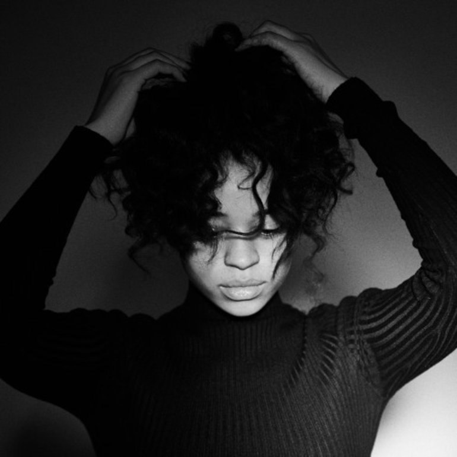
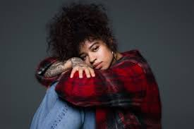

However, Mai didn’t give up and she continued on the solo path. She eventually got her big break by posting videos of herself singing on Instagram. One in particular, a cover of Fetty Wap’s ‘679,’ grabbed popular R&B producer DJ Mustard’s (famous for his work with Rihanna, 2 Chainz and Big Sean) attention and he DM’d Mai about booking a studio session. The session went so well that she moved to LA and signed to DJ Mustard’s label, putting out a trio of EP’s called Time, Change and Ready.
The smash ‘Boo’d Up’ appeared on Ready and it didn’t really take off until it was requested on its own in clubs around the Bay Area. Once a fan movement hit, the song skyrocketed to the top of the charts and Mai’s success truly started to blossom. The song became the singer’s first US top ten and peaked at number 5 on the Billboard Hot 100. It also scored her the opportunity to open for Bruno Mars on his 24K Magic World Tour in replacement of new mother Cardi B.
Mai’s music follows the familiar path of 90s R&B and her voice drips in and out of the beats like golden honey. Her debut self-titled album, which may or may not have been on repeat in the office for the last few months, is a soulful, contemplative collection on love and life with retro, snappy melodies and bouncing beats to really get you vibing. It really is that good.
Ella Mai is definitely here to change the game and bring old school R&B back to life, and we absolutely can’t wait to see what she’ll do next. Keep your eyes on her as this star is only going to shine brighter.
